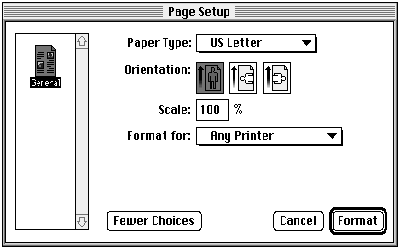
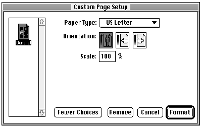
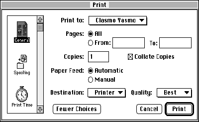
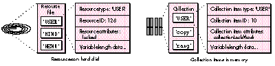
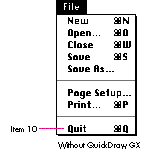
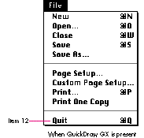

Now that QuickDraw GX has been released, you may be wondering what to do with your
older QuickDraw applications. The good news is that by adding a relatively small
percentage of code to your existing applications, you can support all the new features
of the QuickDraw GX printing architecture and still retain full compatibility with
non-QuickDraw GX systems.
Compatibility with the existing application base was a primary concern during
thedevelopment of QuickDraw GX; only the most hardened "print criminals" shouldhave
compatibility problems. Since a pre-QuickDraw GX application should work in both
QuickDraw GX and non-QuickDraw GX environments, you may think that leaving your
code as it stands is good enough. Becoming compatible probably doesn't require any
revisions to your existing software, and the fact that your application will perform
with or without QuickDraw GX sounds like a pretty good deal. Where's the catch?
Here it is: A non-QuickDraw GX application doesn't have access to several key features
of QuickDraw GX, so its users can't take advantage of many of the new printing
features. For example, with QuickDraw GX a user can:

Page Setup dialog

Custom Page Setup dialog

Print dialog
Figure 1. The new QuickDraw GX printing dialogs
Users are shut out from all these features if they're using a non-QuickDraw GX
application. In this article, you'll see how to increase an application's level of
QuickDraw GX support. I'll take a QuickDraw application and convert it step by step
into an application that fully supports both the QuickDraw and QuickDraw GX printing
architectures. First, we'll consider some definitions and background information.
To begin, let's define the different levels of QuickDraw GX support (from lowest to
highest) that an application can have:
Applications don't need to implement any code to be QuickDraw GX unaware. Becoming
QuickDraw GX aware requires some coding, but typically not very much. Making your
application QuickDraw GX aware is theminimal level of QuickDraw GX support that
you should set your sights on -- just follow the guidelines in this article.
A QuickDraw GX-aware application is really a non-QuickDraw GX application at heart,
with support for QuickDraw GX printing added. This application still uses its old
QuickDraw commands to represent shapes and text; however, in its print loop, the
application uses the QuickDraw GX graphics translator to translate QuickDraw
commands into QuickDraw GX shapes for printing, if QuickDraw GX is available.
If you're just starting out on a new project, or you're in the process of rewriting an
existing product, you should consider the next level of compatibility: QuickDraw GX
savvy. A QuickDraw GX-savvy application meets the requirements for being
QuickDraw GX aware but also takes advantage of the extensive QuickDraw GX graphics
and typography tools. You may feel that becoming QuickDraw GX savvy, although it
brings with it a wealth of increased capabilities, is too big a leap to take in the short
term. In that case, consider making your existing applications QuickDraw GX aware
and, once they're released, going back and working on QuickDraw GX-savvy versions.
It's Apple's hope and goal that no QuickDraw GX-unaware applications will be
incompatible with QuickDraw GX. An existing application can be incompatible only if it
relies on unsupported methods or on unpublished information that breaks under
QuickDraw GX. For printing, this would include things such as trying to access the
Printer Access Protocol (PAP) code from the 'PDEF' 10 resource of the LaserWriter
driver. The QuickDraw GX LaserWriter driver doesn't contain a 'PDEF' 10 resource,
so applications that rely on this approach must be modified to work with QuickDraw
GX.
Developers were warned about the disappearance of the 'PDEF' 10 resource in
"Print Hints: Looking Ahead to QuickDraw GX" in develop Issue 13.*
If your application has compatibility problems with QuickDraw GX, you probably
already suspect it. You're a candidate for such problems if you're perpetrating any of
the "printing crimes" or shaky methods that Apple has warned about in the past.
Sweaty palms and pangs of guilt whenever your application is tested under new system
software are likely indications that you should get out your development tools and
reform your code now. (If you need the old code to run on non-QuickDraw GX systems,
simply provide alternative code for running with QuickDraw GX.) Delve into the
QuickDraw GX API -- you're sure to find a better way of doing things.
Before we go into the specifics of how to add QuickDraw GX printing to your existing
applications, we need to cover some fundamental ideas. I'll start with a discussion of
the Collection Manager, which makes its debut with QuickDraw GX, and then briefly
cover overriding messages and the Message Manager.
For a review of QuickDraw GX printing, see "Getting Started With QuickDraw
GX" and "Developing QuickDraw GX Printing Extensions," both in develop Issue 15.
See also Inside Macintosh: QuickDraw GX Printing. *
CREATING A FOUNDATION TO BUILD ON: THE COLLECTION MANAGER
The Collection Manager is somewhat like a memory-based version of the Resource
Manager. It provides API calls that allow you to create and accesscollections, which are
amorphous structures that can contain data of different types with different sizes.
Collections are similar to resource files under the Resource Manager except that
collections must be in memory, while resource files are by definition disk based.
Routines exist for "flattening" collections into a series of bytes that can be written to
disk and for "unflattening" them for later use.
Just as a resource file may contain Apple-defined data structures such as 'WIND' and
'MENU' resources, a collection may contain predefined collection items such as 'copy'
and 'rang', which specify the number of copies of a print job and the page range of a
print job, respectively. Like resources, collection items have attributes that are
predefined (for example, the collectionLockMask attribute), but unlike resources,
they also have attributes that can be programmer defined. And, as with resources, you
aren't simply stuck with the core set that's been defined by Apple. Figure 2 illustrates
the similarities, including a programmer-defined resource of type 'USER' and a
programmer-defined collection item, also of type 'USER'.

Figure 2. Similarities between resources and collection items
Items in a collection are uniquely identified in three different ways. Every item has a
4-character label, ortag , which identifies the type of collection item. In Figure 2,
there are three collection items having the tags 'USER', 'copy', and 'rang',
respectively. In addition to the tag, every collection item has a longword ID. Together,
the tag and ID are one way to uniquely identify a collection item. Each collection item
can be also be referenced by its collectionindex or by its tag andtag list position. The
index is the relative position of an item in a collection, and the tag list position is the
relative position of a collection item within the item's tag type -- for example, the
first, second, or third 'USER' item in a collection. This gives us three ways to refer to
a specific collection item:
It's important to note that although a collection item's index and tag list position may
change as items are added or removed from a collection, an item's tag and ID will never
change. Therefore, the most common way to refer to collection items is by tag and ID.
Collection tag and resource type naming conventions are the same. Apple
reserves tags listed in the printing interface files, as well as those consisting entirely
of lowercase letters. *
You can either create a collection with the NewCollection routine or use one of the
three types of collections that QuickDraw GX automatically creates for you during
printing. These types are job collections, format collections, and paper-type
collections. Every time a new gxJob, gxFormat, or gxPaperType object is created, a
collection is also created for that object. These collections contain items specifying the
following types of information:
These predefined collections contain many more collection items than are shown here.
See the QuickDraw GX interface file PrintingManager.h for the complete listing. By
simply changing the contents of the collection items, any application, printing
extension, or printer driver can easily affect how a document will be printed.
Note that all predefined collection items have the ID gxPrintingTagID =
-28672. *
Your application can create and use collections for its own purposes. By no means are
you restricted to using collections only within the QuickDraw GX printing
architecture, although that's probably where you'll use them the most.
OVERRIDING MESSAGES FROM AN APPLICATION: THE MESSAGE MANAGER
Sam Weiss's article indevelop Issue 15, "Developing QuickDraw GX Printing
Extensions," introduced the Message Manager. The QuickDraw GX printing architecture
uses the Message Manager to invoke printing operations, and your application,
printing extension, or printer driver can override messages to change printing
behavior. This process is explained in Sam's article, which is a good reference for
anyone unfamiliar with the Message Manager and how QuickDraw GX uses it. This
article assumes that you already have at least a passing familiarity with the basic
concepts.
When you override a message from an application, you're more restricted in what you
can do than if you override a message from a printing extension or printer driver. To
understand why, consider a case where you want to override the QuickDraw GX
printing message GXDespoolPage to add a serial number to the page before it's printed.
You can add this override to a printing extension in a straightforward way that works
regardless of which application prints the document. If, on the other hand, the
override is attempted by an application, the situation becomes more problematic. The
override won't be invoked because it's a despooling-phase message; only
application-phase and spooling-phase messages can be overridden by applications.
To understand a second limitation of application overrides, let's look at how they're
installed in the message handler chain. This is done by passing the routine
GXInstallApplicationOverride a pointer to the override procedure and a reference to
the document's job, like so:
GXInstallApplicationOverride(docJob, gxJobPrintDialog,
MyJobPrintDialogOverride);
In this example, the application is overriding the GXJobPrintDialog message with an
override function called MyJobPrintDialogOverride. docJob is the gxJob object for a
document. Because your application has access only to its own gxJob objects, an
application override can be invoked only for the application that installed it. On the
other hand, a message override from a printing extension can affect every document
that's printed, regardless of which application printed it.
In summary:
Application overrides are best suited for adding features to the printing dialogs and
modifying the print file as a document is being spooled. If you feel limited by either of
the conditions mentioned above, you should move your override out of your application
and into a printing extension.
Now let's look at what an application developer needs to do to support QuickDraw GX
printing. We'll take a QuickDraw application called Simple Sample and convert it into
its QuickDraw GX-aware counterpart, Simple Sample GX. The code for both samples is
on this issue's CD.
The Simple Sample application draws using various QuickDraw commands, including
those for simple objects, bitmaps, and PicComments. It can handle multiple documents
with multiple pages, and although it knows nothing about QuickDraw GX, it is System 7
dependent (I made it that way to save on code and confusion).
Here's a summary of what most QuickDraw GX-aware applications need to do:
Each of these is discussed in order in the rest of this article.
PREPARATION
Before you can do anything with QuickDraw GX, you need to determine whether it's
available. You should do this in your initialize routine, after you've determined that
the other managers yourapplication requires are available. The MyInitGXIfPresent
routine in Listing 1 shows one way of doing this.
Listing 1. QuickDraw GX preparation and cleanup
void MyInitGXIfPresent()
{
long gxVersion, gxPrintVersion;
gGXIsPresent = false;
/* Check to see whether QuickDraw GX is available. */
if (Gestalt(gestaltGXVersion, &gxVersion) == noErr)
if (Gestalt(gestaltGXPrintingMgrVersion, &gxPrintVersion)
== noErr)
gGXIsPresent = true;
/* If so, initialize QuickDraw GX. */
if (gGXIsPresent) {
gClient = GXNewGraphicsClient(nil, kGraphicsHeapSize,
(gxClientAttribute) 0);
GXEnterGraphics();
GXInitPrinting();
}
}
void MyCleanUpGXIfPresent()
{
if (gGXIsPresent) {
GXExitPrinting();
GXDisposeGraphicsClient(gClient);
GXExitGraphics();
}
}
In MyInitGXIfPresent, we use Gestalt to determine whether the QuickDraw GX graphics
and printing routines are present. If so, we call GXNewGraphicsClient to set aside
memory for QuickDraw GX graphics operations, and we call GXEnterGraphics and
GXInitPrinting to enable the QuickDraw GX functions we'll use. Note that we also set a
global variable, gGXIsPresent, which indicates whether the QuickDraw GX managers
we require are present. We'll check this value whenever we need to make a decision
about whether to use QuickDraw or QuickDraw GX methods.
Important: You cannot intermix Printing Manager and QuickDraw GX printing calls.
Do not call _PrGlue[A8FD] if you have called _InitPrinting.
When the user quits the application, we need to release any memory we allocated and
close down QuickDraw GX printing and graphics. We do this as shown in the
MyCleanUpGXIfPresent routine in Listing 1.
CREATING AND DISPOSING OF GXJOB OBJECTS
With the MyInitGXIfPresent and MyCleanUpGXIfPresent routines added to our code,
we're now ready to make our application's documents fit into the QuickDraw GX print
model. We do this by creating a gxJob object whenever we create a document. Our
non-QuickDraw GX application, Simple Sample, contains a routine named
MyCreateDocument that's called whenever the user creates a document. As shown in the
Simple Sample GX application, this routine is modified so that when QuickDraw GX is
present (as indicated by the gGXIsPresent global variable), the application creates a
gxJob for each document, using the GXNewJob routine. If QuickDraw GX is not present,
the application creates a print record handle (THPrint) instead. It's common for an
application to store descriptive information about a document in a private data
structure, and our sample is no exception. The application uses a private structure
called MyDocumentRec that contains information about the number of pages in a
document, the current page being viewed, and so forth. We modify this structure also,
so that we can store a document's job reference and page formatting information with
the document. As seen in Listing 2, we've added the documentJob and pageFormat fields
to the structure. The rest of the fields in this structure were already being managed by
the QuickDraw GX-unaware application, and we'll continue to use them.
Listing 2. MyDocumentRec, modified for QuickDraw GX
#define kMaxPages 20 /* Max pages the sample handles. */
typedef struct MyDocumentRec {
THPrint documentPrintHdl; /* Print record for document. */
gxJob documentJob; /* Job for document. */
gxFormat pageFormat[kMaxPages]; /* Format for each page. */
/* If nil, we use the job format. */
long numPages; /* Number of pages in document. */
long curPage; /* The current page displayed. */
FSSpec documentFSSpec; /* Document's file spec. */
Str31 documentTitle; /* The title of this document. */
WindowPtr documentWindow; /* The window for this document.*/
} MyDocumentRec, *MyDocumentPtr;
We also need to modify the application's MyDisposeDocument routine, which is called
whenever a document is closed. In the modified routine, we dispose of the document's
gxJob.
The changes that we've made so far are indicative of the approach we'll continue to use
as we make our sample QuickDraw GX aware: adding code that executes only if
QuickDraw GX is present. If the user isn't running QuickDraw GX, our converted
sample will appear and function as the original did. But if QuickDraw GX is present,
all the new functionality will kick in.
OVERRIDING GXPRINTINGEVENT
When we added support for gxJobs in the MyCreateDocument routine, we also added the
following line of code:
GXInstallApplicationOverride((*createdDocument)->documentJob,
gxPrintingEvent, MyPrintingEventOverride);
Every application that aspires to be QuickDraw GX aware should include such a line.
Remember, QuickDraw GX has movable modal printing dialogs; the GXPrintingEvent
message is sent whenever a dialog is moved. Unless you override GXPrintingEvent, you
won't have a chance to update your application's windows when the dialogs are moved.
The code to support window updates when the printing dialogs are moved is actually
quite simple. You just need to add a routine that overrides the GXPrintingEvent
message and calls your event- handling routine (Listing 3), and to make sure that
you've disabled the appropriate menu items before displaying the new printing dialogs.
Note that your override should not forward the GXPrintingEvent message, but instead
should perform a total override of it.
Listing 3. MyPrintingEventOverride
OSErr MyPrintingEventOverride(EventRecord *anEvent,
Boolean filterEvent)
{
/* Handle events in whatever way is appropriate. MyDoEvent is
our generic event handler. We don't pass it events that it
shouldn't handle while printing dialogs are displayed. */
if (!filterEvent)
switch (anEvent->what) {
case mouseDown:
case keyDown:
case autoKey:
break;
default:
MyDoEvent(anEvent);
}
return noErr;
}
UPDATING GXJOB OBJECTS ON RESUME EVENTS
There's another piece of event-handling code that every QuickDraw GX-aware
application should include. To support the reentrant nature of QuickDraw GX, you must
call GXUpdateJob on each gxJob that your application is using whenever you receive a
resume event. (See the code for Simple Sample GX on the CD.) This enables QuickDraw
GX to update the information in the gxJob in case it changed while your application was
in the background. As an example, suppose that a user suspends your application to
change the printing extension setup for the destination desktop printer. Upon
switching back to your application, this user will expect anyopen documents to use
these new settings at print time. Unless you call GXUpdateJobon your gxJob objects,
the new settings won't be there.
SAVING AND LOADING A DOCUMENT'S GXJOB
Now that we can create gxJob objects for new documents, let's take a look at how we
can save these to disk and later retrieve them when the documents are opened. We want
to save them for the same reason that we want to store print records with documents
under non-QuickDraw GX systems: if a user has gone to the trouble of configuring
print settings for a document, the user-friendly thing to do is to use those settings the
next time the document is opened.
Because the data we want to save is stored in an abstract data structure (gxJob), we
need a way to convert it to a more tangible form. We accomplish this with the
GXFlattenJob or GXFlattenJobToHdl routine. GXFlattenJob passes the converted data as
a stream of bytes, whereas GXFlattenJobToHdl places the flattened data in a handle. You
would typically use GXFlattenJob to store the flattened gxJob in a data fork, but
GXFlattenJobToHdl to save it as a resource.
Since our application stores its print records in resources, we'll store its flattened
gxJob objects in resources as well. To do this, we modify our application's
MySavePrintInfo routine, which is called to save print records to disk. If QuickDraw
GX is present, the routine will instead save our flattened gxJob.
In the following code, we flatten a gxJob into a handle called thePrintData, which can
then be written to the disk as a resource.
thePrintData = NewHandle(0); GXFlattenJobToHdl(whichDocument->documentJob, thePrintData);
Next, we modify the application's MyLoadPrintInfo routine, which is used to retrieve
print records that were previously saved with MySavePrintInfo. This routine must do
several things, based on whether QuickDraw GX is present and whether a gxJob or
print record has been previously stored with a document. The flow of control is shown
in Listing 4.
As it turns out, some of the steps in Listing 4 can be combined. For example,
regardless of whether QuickDraw GX is present, we may need to retrieve a previously
saved print record. What?! Accessing old-style print records when QuickDraw GX is
present? Sounds strange, doesn't it? We need to do this if QuickDraw GX is available
and the user opens a document that contains a print record but not a gxJob (because it
was created with an older version of the application). We convert the print record to a
gxJob with the GXConvertPrintRecord routine, so that the gxJob has as many of the old
print record's settings as possible.
Listing 4. MyLoadPrintInfo flow of control
if (gGXIsPresent) {
if there’s a previously saved gxJob
unflatten it and use it
else
if there's a previously saved print record
convert that to a gxJob and use it
else
use the default gxJob we created in MyCreateDocument
}
else {
if there's a previously saved print record
use it
else
use the default print record we created in MyCreateDocument
}
CONFIGURING AND HANDLING MENUS
We need to alter our menu routines so that the Custom Page Setup and Print One Copy
commands are available to QuickDraw GX users. We might decide to have two different
File menus, the installation of which would depend on whether QuickDraw GX is
present. Or we might have only one File menu and add or subtract items from it when
it's installed in the menu bar. The approach that's best for a particular application
depends on how the application is structured. (The same choice of approaches applies
to other menus that might need to be modified based on whether QuickDraw GX is
available.)
In the sample code, we modify the File menu as follows: the application contains a
'MENU' resource for the QuickDraw GX version of the File menu; if gGXIsPresent is
false, we remove the Print One Copy and Custom Page Setup menu items from this
menu.
fileMenu = GetMHandle(mFile); DelMenuItem(fileMenu, iPrintOneCopy); DelMenuItem(fileMenu, iCustomPageSetup);
The order of the deletions is very important! If we deleted in the reverse order, the
Custom Page Setup menu item would be deleted, but when we tried to delete Print One
Copy, we would actually delete whatever cameafter Print One Copy. Why? Because the
menu would be one item shorter, and the index into it would no longer be valid. Just
delete menu items from bottom to top and you'll be fine.
Monkeying around with the placement (and inclusion) of menu items like this will
throw our menu- enabling and menu-selection routines out of whack. We need to make
sure that regardless of whether the Print command is item number 8 or 9 in the
menu, we still treat it as a Print command. Again, the approach to use will depend on
the application.
It's conceivable that you would use macros and would make the same changes to both the
menu- enabling and menu-selection routines, but in the sample I chose to tackle menu
enabling and disabling differently than I did menu handling. For the simple enabling
and disabling of menus in the MyAdjustMenus routine, I check to see whether
QuickDraw GX is present and adjust the item numbers based on that. This is the easiest
approach because it requires only minor changes to the routine.
The menu selection situation is a little different. Typically, applications contain a
routine that uses a switch statement based on the ID of the menu and menu items
chosen. This means that we'd need either two such routines (one for QuickDraw and one
for QuickDraw GX) or a different approach from what we used in MyAdjustMenus. I
opted for a different approach. The sample application's MyDoMenuCommand routine
uses a switch statement (as most applications do) based on the menu ID and menu item
extracted from the result of the MenuSelect and MenuKey routines. When QuickDraw
GX is not present, the Quit menu item will be item 10 in the File menu; otherwise, it
will be at item 12 (see Figure 3). The switch statement in the MyDoMenuCommand
function compares the menu item selected to the items in the QuickDraw GX version of
our File menu. Therefore, it will expect that item 12 will be Quit. Item 10 will be
interpreted as Print One Copy! This would be disastrous -- the application would not
quit, and our QuickDraw GX-specific code would be executed when QuickDraw GX
wasn't around! That's not likely to be a pleasant user experience.


Figure 3. The File menu without QuickDraw GX and with QuickDraw GX
A new routine, MyConvertMenuItem, solves this problem (Listing 5). This routine is
called just before we enter the switch statement in MyDoMenuCommand. If QuickDraw
GX is present, MyConvertMenuItem does nothing; otherwise, it checks to see if the
menu item selected was affected by our deletion of the QuickDraw GX menu items, and
if so adjusts it. How's that for an easy solution?
Listing 5. MyConvertMenuItem
void MyConvertMenuItem(short *menuID, short *menuItem)
{
if (!gGXIsPresent) {
if (*menuItem == iCustomPageSetup)
*menuItem = iPrint; /* Print was selected. */
else
if (*menuItem == iPrintOneCopy)
*menuItem = iQuit; /* Quit was selected. */
}
}
INVOKING THE PRINTING DIALOGS AND SUPPORTING CUSTOM
FORMATTING
Earlier, we added code to our application to support window updates when the printing
dialogs are displayed. Now, let's discuss the code required to actually display the
dialogs.
There are now three printing dialogs instead of two (as shown earlier in Figure 1).
The Page Setup dialog now allows users to modify a document's default page format. The
new dialog, Custom Page Setup, provides a way to change page formatting on a
page-by-page basis. If your application creates documents that can have only a single
page, implementing the Custom Page Setup dialog isn'tnecessary; the Page Setup dialog
can be used to configure the document's only page format. The Print dialog is similar to
its non-QuickDraw GX counterpart, although much enhanced.
We use GXJobDefaultFormatDialog, GXFormatDialog, and GXJobPrintDialog to display
the Page Setup, Custom Page Setup, and Print dialogs, respectively.
We modify our MyDoPageSetup routine to call GXJobDefaultFormatDialog instead of
PrStlDialog when QuickDraw GX is present. In our MyDoCustomPageSetup routine,
which is called only when QuickDraw GX is available, we simply call GXFormatDialog,
passing the current page's gxFormat.
In both of these page setup routines, and in the code for MyPrintDocument that follows,
we call a function named MyAdjustMenusForPrintDialogs, which disables and enables
entire menus (Listing 6). We disable menus before displaying a printing dialog, and
enable them once the dialog goes away. If we didn't disable the menus, users would be
able to select menu items. And, because the GXPrintingEvent override calls our
MyDoEvent routine, any queued-up menu selections would be processed when the
GXPrintingEvent message was sent. The user could be in the Print dialog, then select
Quit from the File menu, and the next time the window was updated, the application
would quit! The only menus a user should have access to are the Edit menu and the
system menus. (Users can open desk accessories from the Apple menu, for example,
while a printing dialog is displayed -- but they should not be able to open the About
item for the application.)
Listing 6. MyAdjustMenusForPrintDialogs
void MyAdjustMenusForPrintDialogs(Boolean dialogGoingUp)
{
MenuHandle appleMenu, fileMenu, editMenu, documentMenu;
appleMenu = GetMHandle(mApple);
fileMenu = GetMHandle(mFile);
editMenu = GetMHandle(mEdit);
documentMenu = GetMHandle(mDocument);
if (dialogGoingUp) {
DisableItem(appleMenu, iAbout);
DisableItem(fileMenu, 0);
DisableItem(documentMenu, 0);
HiliteMenu(0);
}
else {
EnableItem(appleMenu, iAbout);
EnableItem(fileMenu, 0);
DisableItem(editMenu, 0);
EnableItem(documentMenu, 0);
}
DrawMenuBar();
gInPrintDialog = dialogGoingUp;
}
The system enables some menus, namely the Help menu, the Application menu,
and the Keyboard menu, even when dialogs are displayed. Your code doesn't need to deal
with them. *
The MyPrintDocument routine (Listing 7) displays the appropriate Print dialog and
then branches to our QuickDraw or QuickDraw GX printing routine. Note that we've
been careful to call PrOpen and PrClose only when QuickDraw GX is not present. As
mentioned earlier, you cannot intermix Printing Manager and QuickDraw GX printing
calls.
Listing 7. MyPrintDocument
OSErr MyPrintDocument(MyDocumentPtr whichDocument)
{
OSErr err = noErr;
gxEditMenuRecord editMenuRec;
gxDialogResult result;
if (gGXIsPresent) {
/* If GX is present, fill in the location of the
applications Edit menu items, enable/disable the
appropriate menu items, and display the Print dialog.
If the user clicks OK, print. */
editMenuRec.editMenuID = mEdit;
editMenuRec.cutItem = iCut;
editMenuRec.copyItem = iCopy;
editMenuRec.pasteItem = iPaste;
editMenuRec.clearItem = iClear;
editMenuRec.undoItem = iUndo;
MyAdjustMenusForPrintDialogs(true);
result = GXJobPrintDialog(whichDocument->documentJob,
&editMenuRec);
MyAdjustMenusForPrintDialogs(false);
if (result == gxOKSelected)
err = MyGXPrintLoop(whichDocument);
}
else {
/* If GX is NOT present, open the printer driver and print
using the Printing Manager. */
PrOpen();
if (PrJobDialog(whichDocument->documentPrintHdl))
err = MyQDPrintLoop(whichDocument);
PrClose();
}
return err;
}
We've made a few other changes behind the scenes; see the complete code on the CD for
details. The code for repaginating a document has been changed slightly to use the
dimensions of QuickDraw GX page formats, if available, rather than those in the rPage
field of the old print record. We also made minor changes to our MyInsertPage and
MyDisposePage routines in order to manage gxFormats on a page-by-page basis. In the
Simple Sample GX application, we store nil in our MyDocumentRec.pageFormat array
whenever a new page is created. Because nil is an invalid gxFormat reference, we can
use it to tell the application to use our gxJob object's default format for a given page. If
the value stored is non-nil, we can safely assume that it's a valid reference to a custom
page format. Finally, in our MyDisposePage routine, we now call GXDisposeFormat if
the page being removed uses a custom page format.
Since we store gxFormat references on a page-by-page basis, shouldn't we also dispose
of page formats in the MyDisposeDocument routine? Well, we certainly can do that,
but there's really no need. When we dispose of the document's gxJob, QuickDraw GX
automatically disposes of all of the job's page formats. The flip side of this is that you
must not attempt to use any gxFormat references once the format's corresponding job
is disposed of.
Continuing with this line of thought, what happens to a document's page formats when
the document is saved to disk and later reopened? As it turns out, flattening a gxJob
causes all of the job's page formats to be flattened also. This means that the code we
wrote earlier to flatten and store a document's gxJob in a resource will also store page
formats. When we later unflatten the job, the page formats will be unflattened as well.
STORING THE PAGE-TO-FORMAT CORRESPONDENCES
It's easy to fall into the trap of thinking that you don't need to do anything more to
support saving and loading of by-page formats -- but don't. There are still two more
issues to consider.
The first issue is straightforward enough: we haven't stored our page-to-format
correspondences, so the next time we open the document we'll have no idea which
format goes with which page. The second issue requires a bit more explaining.
When QuickDraw GX creates a page format, it returns a format reference that's based
partially on the reference of the job with which the format is associated. Since
reference IDs for gxJob objects differ depending on conditions when the job is created,
a job reference that's valid when a document is saved is unlikely to be correct when
the document is later reopened. Similarly, the format references we have when a
document is saved are unlikely to be correct when the document's job is later
unflattened.
It should now be clear that we can't simply store our page format reference IDs with a
document. To provide the page-to-format information we'll need when we open the
document, we have to find another method. Fortunately, there's a very easy way to do
this via the Collection Manager.
As mentioned earlier, every gxFormat has a collection associated with it. QuickDraw
GX creates these collections automatically when a gxFormat is created. When a format
is flattened, its collection is also flattened. Specifically, any collection items that have
the collectionPersistenceBit attribute set are included in the flattened data stream.
This attribute is set by default when a new collection item is added, so you need to
change it only if youdon't want a collection item to be included in the flattened data.
To store page-to-format mapping, we'll create a custom collection item. We'll store
this collection item in the default format's format collection. The collection item
consists of an array of long words -- one for each page in the document. In this array,
we store the index of the format to use for each page, in order. Since formatindices are
preserved during flattening (unlike formatreferences ), we'll be able to reconstruct
the page-to-format relationships when we reopen the document. The
MySaveFormatRefs routine (Listing 8) saves the format indices. This routine is called
from our MySavePrintInfo routine, just before we flatten the document's gxJob (and
in turn its page formats and format collections).
Listing 8. MySaveFormatRefs
#define kMyFormatInfoType 'FLST'
#define kMyFormatInfoTagID 1000
OSErr MySaveFormatRefs(MyDocumentPtr whichDocument)
{
OSErr err = noErr;
Handle theFormatIdxList;
Collection fmtCollection;
gxFormat defaultFmt;
if (whichDocument->numPages > 0) {
/* Get the job's default format's collection. */
defaultFmt = GXGetJobFormat(whichDocument->documentJob, 1);
fmtCollection = GXGetFormatCollection(defaultFmt);
/* Create a list of page-to-format correspondences for the
current document. If there are no errors, add the item
to the job's default format's collection for later
retrieval. */
err = MyCreateFormatIndexList(whichDocument,
&theFormatIdxList);
if (err == noErr) {
HLock(theFormatIdxList);
err = AddCollectionItem(fmtCollection, kMyFormatInfoType,
kMyFormatInfoTagID, GetHandleSize(theFormatIdxList),
*theFormatIdxList);
DisposeHandle(theFormatIdxList);
}
}
return err;
}
Our saved documents now contain information for associating pages with page formats.
The MyAdjustFormats routine (Listing 9) extracts this information from the default
format's format collection when we load the saved document. In effect, the code finds
new format reference IDs for each format we flattened and stores those IDs with the
pages that use them. In this way, we completely avoid relying on the old (and invalid)
format references.
Listing 9. MyAdjustFormats
OSErr MyAdjustFormats(MyDocumentPtr whichDocument)
{
OSErr err = noErr;
Handle theFormatIdxList = nil;
gxFormat theFormat, defaultFmt;
long pg, numPages, fmtIdx, *idxList, idx, listSize,
attribs;
Collection fmtCollection;
defaultFmt = GXGetJobFormat(whichDocument->documentJob, 1);
fmtCollection = GXGetFormatCollection(defaultFmt);
err = GetCollectionItemInfo(fmtCollection, kMyFormatInfoType,
kMyFormatInfoTagID, &idx, &listSize, &attribs);
if (err == noErr)
theFormatIdxList = NewHandle(listSize);
if (theFormatIdxList != nil) {
HLock(theFormatIdxList);
err = GetCollectionItem(fmtCollection, kMyFormatInfoType,
kMyFormatInfoTagID, dontWantSize, *theFormatIdxList);
numPages = listSize / sizeof(long);
idxList = (long *) *theFormatIdxList;
for (pg = 0; (err == noErr) && (pg < numPages); pg++) {
fmtIdx = idxList[pg];
if (fmtIdx != (long) nil) {
theFormat = GXGetJobFormat
(whichDocument->documentJob, fmtIdx);
err = GXGetJobError(whichDocument->documentJob);
}
else
theFormat = nil;
if (err == noErr)
whichDocument->pageFormat[pg] = theFormat;
}
DisposeHandle(theFormatIdxList);
}
return err;
}
TRANSLATING AND PRINTING QUICKDRAW COMMANDS
At long last, we're ready to look at the code that translates our QuickDraw commands to
QuickDraw GX shapes and prints them. To do the translation, we'll use the QuickDraw
GX translator routines. We specify how we would like the translation to be performed
by passing one of the gxTranslationOptions to the translator routines. (The routines
and translation options are listed inInside Macintosh: QuickDraw GX Environment and
Utilities. ) Normally, the default translation options are all you need, and those are
what we use in Simple Sample GX.
The translation routines come in two varieties -- those that take a single QuickDraw
PicHandle and convert it to a QuickDraw GX picture shape, and those that let you
execute QuickDraw commands and create equivalent QuickDraw GX shapes as you do so.
Converting a PicHandle to a gxPicture shape is straightforward; therefore, we're going
to take the second approach. Most applications don't print by simply making a
QuickDraw DrawPicture call, so understanding how to convert individual QuickDraw
commands to QuickDraw GX shapes "on the fly" is probably more useful. If your needs
are different, you can use the GXConvertPICTToShape routine to convert a PicHandle
into a gxPicture shape.
The routines we'll use are GXInstallQDTranslator and GXRemoveQDTranslator.
GXInstallQDTranslator tells QuickDraw GX to begin translating QuickDraw commands
into QuickDraw GX shapes, and GXRemoveQDTranslator tells QuickDraw GX that we've
completed drawing. These routines are used in conjunction with a third routine, called
a gxSpoolProc, which you create. Your gxSpoolProc routine will have the following
format and will be called whenever QuickDraw GX completes a new shape during the
translation:
OSErr MyShapeSpoolProc(gxShape currentShape, long refCon);
The currentShape parameter contains the QuickDraw GX shape that the translator just
created, and the refCon parameter is a programmer-defined value that you pass to
GXInstallQDTranslator. You needn't use the refCon parameter (you can pass nil), but
as we'll see in a moment, the refCon can be very handy.
The code in Listing 10 shows the basic QuickDraw GX print loop, with support added to
translate QuickDraw commands into QuickDraw GX shapes.
The code in Listing 10 contains nrequire, require, nrequire_action, and
require_action macros, which are discussed in the article "Living in an Exceptional
World" in develop Issue 11. These macros, which don't require QuickDraw GX
themselves, are now included in the QuickDraw GX interface file GXExceptions.h.*
Listing 10. MyGXPrintLoop
OSErr MyGXPrintLoop(MyDocumentPtr whichDocument)
{
OSErr err;
long firstPage, lastPage, numPages, pg;
short oldPage;
gxViewPort printViewPort;
Point patStretch = {1,1};
gxFormat pageFormat;
Rect everywhereRect;
gxShape pageShape;
MySpoolDataRec spoolData;
oldPage = whichDocument->curPage;
/* Determine which pages the user selected to print, and print
only those pages that are actually in the document. */
GXGetJobPageRange(whichDocument->documentJob, &firstPage,
&lastPage);
if (lastPage > whichDocument->numPages)
lastPage = whichDocument->numPages;
/* Calculate the number of pages to print and begin printing. */
numPages = lastPage - firstPage + 1;
err = GXGetJobError(whichDocument->documentJob);
nrequire(err, PageRangeError);
GXStartJob(whichDocument->documentJob,
whichDocument->documentTitle, numPages);
err = GXGetJobError(whichDocument->documentJob);
nrequire(err, StartJobFailed);
/* Create a new view port for printing and set our translator
rects to "wide open" so that they include all data
we're drawing. For each page we print, call GXStartPage,
draw, and call GXFinishPage. */
SetRect(&everywhereRect, 0, 0, 32767, 32767);
printViewPort = GXNewViewPort(gxScreenViewDevices);
for (pg = firstPage; (err == noErr) && (pg <= lastPage); pg++)
{
/* Get the page's format and start printing the page. */
pageFormat = whichDocument->pageFormat[pg - 1];
if (pageFormat == nil)
pageFormat = GXGetJobFormat
(whichDocument->documentJob, 1);
GXStartPage(whichDocument->documentJob, pg, pageFormat, 1,
&printViewPort);
err = GXGetJobError(whichDocument->documentJob);
/* If there were no errors, set up the translator, draw
the QuickDraw data for current page, and remove the
translator. */
nrequire(err, StartPageFailed);
spoolData.printViewPort = printViewPort;
GXGetFormatDimensions(pageFormat, &spoolData.pageArea, nil);
GXInstallQDTranslator(whichDocument->documentWindow,
gxDefaultOptionsTranslation, &everywhereRect,
&everywhereRect, patStretch, MyPrintAShape,
&spoolData);
whichDocument->curPage = pg;
SetPort(whichDocument->documentWindow);
MyDrawContents(whichDocument->documentWindow);
GXRemoveQDTranslator(whichDocument->documentWindow, nil);
GXFinishPage(whichDocument->documentJob);
}
StartPageFailed:
GXFinishJob(whichDocument->documentJob);
err = GXGetJobError(whichDocument->documentJob);
GXDisposeViewPort(printViewPort);
whichDocument->curPage = oldPage;
StartJobFailed:
PageRangeError:
return err;
}
Several important things are going on in the code in Listing 10. You may recognizethe
basic QuickDraw GX print loop, which consists of everything in MyGXPrintLoopexcept
the view port and translator routines. The first thing we do in the print loop is create
a gxViewPort object, because GXStartPage needs to know which view ports we'll be
drawing to. Only shapes drawn in the specified view ports will be printed. For our
purposes, one view port will suffice, so that's all we create.
There are two basic print loop methods for QuickDraw GX: the first uses GXPrintPageto
print a single gxPicture shape; the second method uses the GXStartPage and
GXFinishPage routines. In the second method, the application specifies a list of view
ports, and any QuickDraw GX drawing that occurs in any of these view ports is instead
redirected to a print file. Since our application draws several shapes on a page, it
makes sense to use the GXStartPage and GXFinishPage approach. If we had only one
shape to print (for instance, if we had used GXConvertPICTToShape), or if our
gxSpoolProc collected all the converted shapes into one gxPicture shape, using
GXPrintPage would make more sense.
Notice that the custom page formats that we've added to our application are supported,
and they require only a couple of lines of code. Recall that in this application we've
decided to use nil to represent the default job format. If the current page's format
reference ID is not nil, we pass GXStartPage the reference; otherwise, we pass the
gxJob object's default format. This default format is always positioned as the first
format in a gxJob, so we can obtain it as follows:
pageFormat = GXGetJobFormat(whichDocument->documentJob, 1);
Before we can issue our QuickDraw drawing commands, we must call
GXInstallQDTranslator. Because all QuickDraw drawing calls are ignored by the
QuickDraw GX printing routines, we need to translate all QuickDraw commands to
QuickDraw GX shapes for printing. In the GXInstallQDTranslator call, we specify that
we want to use the default translation options, that we don't want to stretch patterns,
and that our shape- handling routine is called MyPrintAShape. Finally, remember the
refCon parameter we discussed earlier? Well, here's where it comes into play. In the
refCon, we pass a pointer to a MySpoolDataRec, which is defined as
typedef struct MySpoolDataRec {
gxRectangle pageArea; /* Page rectangle. */
gxViewPort printViewPort; /* View port we're printing in. */
} MySpoolDataRec, *MySpoolDataPtr;
The MyPrintAShape routine is passed each QuickDraw GX shape that is created as the
result of the QuickDraw translation. We can print each shape because a pointer to our
MySpoolDataRec is passed in the refCon parameter of MyPrintAShape. We print a
shape by attaching the MySpoolDataRec.printViewPort to the current shape, and then
drawing the shape. We use the page rectangle in the MySpoolDataRec to determine
whether a translated shape will appear on the printed page. If the shape isn't on the
page, it doesn't make sense to waste time and disk space spooling it. Listing 11 shows
how cleanly this all fits together.
Listing 11. MyPrintAShape
OSErr MyPrintAShape(gxShape currentShape, long refCon)
{
MySpoolDataPtr spoolData;
gxShapeType theShapeType;
spoolData = (MySpoolDataPtr) refCon;
theShapeType = GXGetShapeType(currentShape);
/* Don't waste time spooling the shape if it's being drawn off
the page. */
if ((theShapeType == gxEmptyType) ||
(theShapeType == gxFullType) ||
(theShapeType == gxPictureType) ||
GXTouchesBoundsShape(&spoolData->pageArea, currentShape)) {
GXSetShapeViewPorts(currentShape, 1,
&spoolData->printViewPort);
GXDrawShape(currentShape);
}
return (OSErr) GXGetGraphicsError(nil);
}
Back in our print loop, we simply draw our page's QuickDraw representation between
the GXInstallQDTranslator and GXRemoveQDTranslator calls. QuickDraw commands are
translated to QuickDraw GX shapes and printed in one fell swoop.
PRINT ONE COPY
A soon-to-be-familiar sign of the QuickDraw GX application will be the Print One
Copy command in the application's File menu. The option to print one copy of a
document without any dialogs is a big convenience to the user, and it requires only a
few minutes of coding to support.
In addition to changing the necessary menu setup and handling routines, we need to add
a routine to support Print One Copy (Listing 12). In this routine, we temporarily
reset three of the printing options that the user may have previously changed. First,
we set up the print job so that it prints only one copy. The number of copies last
printed is stored in the gxJob object, and we want to make sure that if the user
previously printed multiple copies of a document, only one copy comes out of the
printer when Print One Copy is chosen. Second, we indicate that we want to print all
pages of the document, rather than the last page range used. Finally, the output
shouldcome out of the printer . If the job was last printed to a file, we'll need to change
the job object's "Print to disk" setting. Once again, we call upon the Collection
Manager, although this time we access the job collection.
Listing 12. MyPrintOneCopy
OSErr MyPrintOneCopy(MyDocumentPtr whichDocument)
{
OSErr err;
Collection jobCollection;
gxCopiesInfo copiesInfo;
gxFileDestinationInfo destInfo;
gxPageRangeInfo pageRangeInfo;
Ptr oldCopiesInfo = nil,
oldPageRangeInfo = nil,
oldDestInfo = nil;
long oldCopiesSize, oldPageRangeInfoSize,
oldDestInfoSize;
/* Get the job collection and set it up to print one copy. */
jobCollection = GXGetJobCollection(whichDocument->documentJob);
/* Set number of copies to 1. */
copiesInfo.copies = 1;
err = MyReplaceCollectionItem(&copiesInfo, sizeof(gxCopiesInfo),
gxCopiesTag, gxPrintingTagID, jobCollection,
&oldCopiesInfo, &oldCopiesSize);
nrequire(err, ReplaceCopies_error);
/* Set page range to "all". */
pageRangeInfo.simpleRange.optionChosen = gxDefaultPageRange;
pageRangeInfo.minFromPage = 1;
pageRangeInfo.simpleRange.fromPage = 1;
pageRangeInfo.maxToPage = whichDocument->numPages;
pageRangeInfo.simpleRange.toPage = whichDocument->numPages;
pageRangeInfo.simpleRange.printAll = true;
err = MyReplaceCollectionItem(&pageRangeInfo,
sizeof(gxPageRangeInfo), gxPageRangeTag,
gxPrintingTagID, jobCollection, &oldPageRangeInfo,
&oldPageRangeInfoSize);
nrequire(err, ReplacePageRange_error);
/* Set destination to "printer". */
destInfo.toFile = false;
err = MyReplaceCollectionItem(&destInfo,
sizeof(gxFileDestinationInfo), gxFileDestinationTag,
gxPrintingTagID, jobCollection, &oldDestInfo,
&oldDestInfoSize);
nrequire(err, ReplaceDestination_error);
/* Print one copy of our document. */
err = MyPrintDocument(whichDocument);
/* Restore original number of copies, page range, and output
destination in case anybody uses that info. */
ReplaceDestination_error:
MyReplaceCollectionItem(oldDestInfo, oldDestInfoSize,
gxFileDestinationTag, gxPrintingTagID, jobCollection, nil,
nil);
ReplacePageRange_error:
MyReplaceCollectionItem(oldPageRangeInfo, oldPageRangeInfoSize,
gxPageRangeTag, gxPrintingTagID, jobCollection, nil, nil);
ReplaceCopies_error:
MyReplaceCollectionItem(oldCopiesInfo, oldCopiesSize,
gxCopiesTag, gxPrintingTagID, jobCollection, nil, nil);
/* Dispose of pointers that MyReplaceCollectionItem created. */
if (oldCopiesInfo)
DisposePtr(oldCopiesInfo);
if (oldPageRangeInfo)
DisposePtr(oldPageRangeInfo);
if (oldDestInfo)
DisposePtr(oldDestInfo);
return err;
}
The MyReplaceCollectionItem routine, which I created for the Simple Sample GX
application, has the format
OSErr MyReplaceCollectionItem(void *newData, long collectionItemSize,
OSType collectionType, long collectionID, Collection
whichCollection, Ptr *oldData, long *oldDataSize);
This routine replaces a collection item and returns a copy of its old data. It takes a
pointer to the collection data we want to store, and the size, type, ID, and collection to
store it in. In the last two parameters, you pass a reference to a pointer in which to
store the existing data and a reference to a long word in which to store its size. If the
oldData pointer is nil, the existing data is not returned; otherwise, a new pointer is
created in the oldData parameter, and the data is returned there.
MyReplaceCollectionItem allows you to replace a collection item, execute some code,
and then restore the collection item. That's exactly what we do in the MyPrintOneCopy
routine.
DRAG-AND-DROP PRINTING
The final thing that a QuickDraw GX-aware application should support is the new
attribute of the 'pdoc' Apple event, enabling users to print documents by dragging their
icons to desktop printers. You need to make only a few changes to your current 'pdoc'
Apple event handler, as you can see from Listing 13. With these changes to the Apple
event handler, our conversion of the QuickDraw sample application to one that's
QuickDraw GX aware is complete.
Listing 13. 'pdoc' Apple event handler, modified for QuickDraw GX
pascal OSErr MyHandlePDOC(AppleEvent *theAppleEvent,
AppleEvent *reply, long myRefCon)
{
OSErr err;
AEDescList docList, dtpList;
FSSpec myFSS, dtpFSS;
long itemsInList, i;
AEKeyword theKeyword;
DescType typeCode;
Boolean draggedToDTP = false;
Size actualSize;
MyDocumentPtr newDocument;
/* See if the document was dragged to a desktop printer. */
err = AEGetAttributeDesc(theAppleEvent, keyOptionalKeywordAttr,
typeAEList, &dtpList);
if (err == noErr) draggedToDTP = true;
/* If we dragged to a desktop printer, get the name of that
printer and then throw away the description list for it. */
if (draggedToDTP) {
err = AEGetNthPtr(&dtpList, 1, typeFSS, &theKeyword,
&typeCode, (Ptr) &dtpFSS, sizeof(FSSpec),
&actualSize);
AEDisposeDesc(&dtpList);
}
/* Get our document list. */
err = AEGetParamDesc(theAppleEvent, keyDirectObject, typeAEList,
&docList);
nrequire(err, AEError);
/* Make sure we've accounted for all of the parameters passed,
and count the number of documents passed in. */
err = MyCheckAEParams(theAppleEvent);
nrequire(err, AEError);
err = AECountItems(&docList, &itemsInList);
nrequire(err, AEError);
/* For each entry in the doc list, load it, print it, and */
/* close it. */
for (i = 1; i <= itemsInList; i++) {
err = AEGetNthPtr(&docList, i, typeFSS, &theKeyword,
&typeCode, (Ptr) &myFSS, sizeof(FSSpec),
&actualSize);
nrequire(err, AEEntryError);
/* Load the document. */
err = MyCreateDocument(kDefaultTitle, &newDocument);
nrequire(err, CreateDocFailed);
err = MyFSLoadDocument(newDocument, &myFSS);
nrequire(err, LoadDocFailed);
/* If we dragged to a desktop printer, select that as the
output printer for this job, and print one copy. */
if (draggedToDTP) {
GXSelectJobOutputPrinter(newDocument->documentJob,
dtpFSS.name);
err = MyPrintOneCopy(newDocument);
}
else
/* "Print" chosen from Finder. Show dialog and print. */
err = MyPrintDocument(newDocument);
/* Close the document once it's printed. */
LoadDocFailed:
MyDisposeDocument(newDocument);
}
/* When we're all done, throw away the document list and exit. */
CreateDocFailed:
AEEntryError:
AEDisposeDesc(&docList);
AEError:
if (gQuitAfterPrinting)
gQuitting = true;
return err;
}
For information on the 'pdoc' Apple event, see Inside Macintosh:
Interapplication Communication, Chapter 4.*
Now that you know how to add QuickDraw GX printing to a QuickDraw application, go do
it! Think of all the features you'll instantly support by being QuickDraw GX aware.
The time hit to gain this level of compatibility is minimal for most applications, and
well worth it.
Still not convinced? Take the sample applications and print with both versions under
QuickDraw GX. Even this simple program shows that if your applications aren't
QuickDraw GX aware, you (and your users) are really missing out.
DAVE HERSEY likes the annoying buzzing noise that ImageWriters and ImageWriter
LQs make. He also enjoys listening to Guns N Roses, but only while he's answering
developer e-mail at Apple's Developer Support Center. Dave recently wrote a
QuickDraw GX printer driver for the Apple Color Plotter (which is from an era before
the first Macintosh). When asked why he bothered, he said "Well, it makes this cool
wacka-wacka sound." Clearly, Dave is an audiophile for the '90s. *
Thanks to our technical reviewers Pete ("Luke") Alexander, Hugo Ayala, Tom Dowdy,
and Ken Hittleman. *